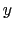

Next: IMD Connect Simulation Window
Up: Description of each VMD
Previous: Render Window
Contents
Index
Subsections
Tool Window
Figure 5.12:
The Tool window
|
The Tool window is used to set up external 3D pointers,
buttons, force-feedback devices, and the VMD ``tools'' that they
control. VMD communicates with input devices through
CAVElib, FreeVR, or via Virtual Reality Peripheral Network (VRPN),
or with direct operating system interfaces.
Since VRPN provides networked device abstraction, VMD doesn't
have to be running on the same computer that VRPN devices are
attached to. With VRPN, you may use buttons, trackers,
and also force-feedback (haptic) devices such as the PHANToM.
In the CAVE or FreeVR, VMD recognizes two types of devices: buttons
and trackers. The built-in Spaceball driver can also be used to
control tools.
To use input devices with VMD ``tools'', you need a
sensor configuration file,
in your home directory called .vmdsensors (see the VMD Installer Guide).
In this file, any number of devices
can be specified, using a universal sensor locator
(USL).
The format for a USL is as follows:
USL - type://place/name:nums
- type - the type of sensor
(vrpntracker, vrpnbuttons, vrpnfeedback,
cavetracker, cavebuttons, or sballtracker)
- place - the machine that controls it. Devices that
cannot yet be used on arbitrary computers over the network must
have the keyword local here to be compatible with future
versions.
- name - the name of the device within that machine. If
multiple devices can't currently exist, such as with the CAVE,
then a standard name should be used, such as cave, so that
the same USL will make sense in the future, when multiple devices
are allowed.
- nums - a comma-separated list of numbers of devices
belonging to that names (optional, defaults to zero). Some
devices demand only one number or a specific number but button
devices should work correctly now.
The lines of a sensor configuration file come in four flavors:
- Comments begin with # and are ignored.
- Empty lines are also ignored.
- Device lines have the form device name
USL, where name is the name that VMD will use to refer
to the device, and USL is the device's USL.
- Options tell VMD how to use the most recently listed
device. Currently, there are four supported options:
- ``scale
 '' scales the position of a tracker by a
factor
.
'' scales the position of a tracker by a
factor
.
- ``offset

 '' adds a constant vector to the
position of a tracker.
'' adds a constant vector to the
position of a tracker.
- ``rot right|left
''
multiplies the orientation matrix returned by a tracker on either
the right or the left by the matrix
.
- ``forcescale
'' multiplies the force applied to a
force-feedback device by the amount
.
Here is a simple example, showing some of the things you can do with a
sensor configuration file, for a more complete example, please refer
to the .vmdsensors file that came with your VMD distribution:
### Sensable PHANTOM via VRPN
### http://www.sensable.com/
### The Phantom haptic device connected to the computer "odessa"
device phantomtracker vrpntracker://odessa/Phantom0
scale 10
rot left 0 0 -1 0 1 0 1 0 0
device phantombuttons vrpnbuttons://odessa/Phantom0
device phantomfeedback vrpnfeedback://odessa/Phantom0
Using Tools
There are several different ``tools'',
each of which can be used with any of the input
devices5.1:
- The Grab Tool mimics a pair of tweezers, and can be
used to move molecules around on the screen without any keyboard or
mouse commands. Pressing a button connects the 3d cursor to the
nearest molecule. Then, moving or rotating the tracker will cause the
molecule to move or rotate around on the screen.
- The Rotate Tool is a tool for precisely rotating
molecules with haptic devices. When a button is pressed and released,
the cursor is again connected to the molecule. With this tool,
however, the center of the molecule is fixed, and the end of the
haptic pointer is forced to lie on the surface of a sphere about this
center. Moving the device around the surface of the sphere rotates
the molecule, and another button click releases the molecule. There
are detentes -- like the clicks commonly felt in a 2d dial -- on the
surface of the sphere, arranged so that the user can rotate the molecule to
precise 90-degree points. If the user holds down the button for a
while initially, he can feel the sphere and the detentes, but do not
affect the molecule. This ``preview mode'' allows the user to find a
good point from which to start the rotation.
- The Joystick Tool is the three-dimensional equivalent of a
Joystick, for haptic devices. Pressing the button creates a virtual
``spring,'' holding the device to its current location. If it is
pushed away from this point in some direction, the selected molecule
starts sliding in that direction, with a velocity that is proportional
to the displacement of the device. The joystick tool shows how a
three dimensional input device can be used to supply relative
(differential) coordinates instead of absolute coordinates.
- The Tug Tool is a tool that allows interaction with
running molecular dynamics simulations. Pressing the button connects
the device with a simulated spring to the nearest atom, and pulling on
it adds a force to the simulation. If a haptic device is being used,
the user will feel a force on his hand that is proportional to this
force. In this way, the tug tool implements something like the
click-and-drag that is commonly used with windowing systems.
If an atom selection is assigned to the Tools,
the the Tug Tool will apply a force to
all the atoms in the selection. The force applied will be proportional to
the masses of the atoms in the selection, so that all atoms experience the
same acceleration. When a Tool Selection has been assigned, the Tug Tool
will always affect that selection, even if the button is pressed far from
any atoms in the selection; this is intended to make it easier for the
user to apply forces only on those atoms he/she intends to steer.
- The Spring Tool also allows interaction with running
molecular dynamics simulations. It works like the Tug Tool except that when the button on the tracker is released near an
atom, the simulated spring is connected to it. See
section 5.4.8 for information on viewing and
modifying the list of active springs.
- The Pinch Tool is similar to the Tug Tool, except that
force is applied only along the axis defined by the orientation of the
tracker.
- The Print Tool is meant to be used as a debugging aid when
one first sets up VMD for use with VRPN, the CAVE, or other 3-D input
devices. When enabled, this tool prints text messages to the VMD console
indicating the current position of the tool in question. This tool is
useful when calibrating the various transformation matrices that operate on
tracker position and orientation data (whether in VMD or in VRPN, CAVElib,
etc).
To add a new tool to a VMD session, open the Tool window and click
the Create Tool button. The tool's number and type are
displayed in the list to the left. Devices can be added to the tool
by selecting them from the Add Device menu, or removed with
the Delete Device button. Some of the options that can be
specified in the sensor configuration file can be edited in using the
controls below, and the tool's type can be changed with the Type menu.
Next: IMD Connect Simulation Window
Up: Description of each VMD
Previous: Render Window
Contents
Index
vmd@ks.uiuc.edu